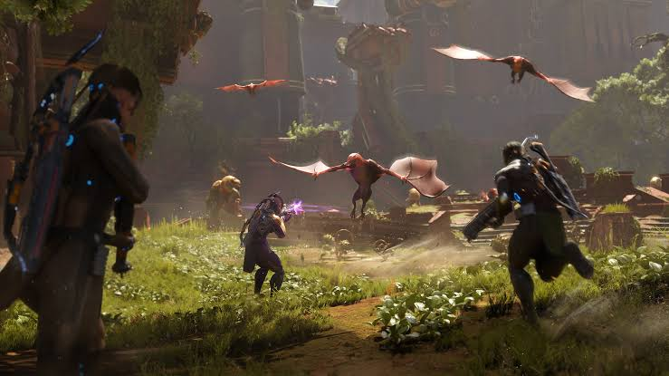
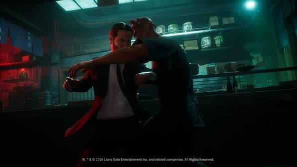

I'm an animation programmer. I build the systems that make game characters move well, in Unreal Engine 5.
Experience in AAA and indie development, highly proficient in Unreal Engine (C++). I act as a bridge between technical and artistic teams, design complex animation systems and raise the visual quality of gameplay. I learn fast and enjoy multidisciplinary teams.
Work
Where I've built things
Saber Interactive
Animation Programmer Madrid · Nov 2023 – present
Primary bridge between the animation and programming teams, aligning technical and artistic goals.
Implemented core gameplay mechanics and enhanced visual animations on AAA projects, including Turok: Origins (story trailer, gameplay trailer) and the John Wick game (reveal trailer).
Create new animation systems and refine existing ones to raise visual quality.
Build Unreal Engine 5 projects in C++ with a robust gameplay architecture.
Design custom Animation Blueprint nodes that give animators better tools.
Implement physics and Inverse Kinematics (IK) systems for dynamic character and creature movement.
Use Unreal's Gameplay Ability System (GAS) to integrate abilities and gameplay mechanics.
Turok: Origins

John Wick

PadaOne Games
Software Engineering Intern Madrid · Nov 2022 – Jun 2023
Developed AI Behavior Trees in Unity for enemy senses in a stealth game.
Created Augmented Reality tools for the game design team.
Modernized a legacy codebase to newer frameworks.
Vicomtech
Research Assistant San Sebastián · Aug 2021 – Aug 2022
Built collaborative AR apps for HoloLens, Android, iOS, PC and Web with Unity, ARFoundation and React with Three.js.
Contributed to European technology transfer projects: H2020 ARETE, H2020 RESCUER and 5G EUSKADI.
Co-author of the paper "Collaborative Augmented Reality Tools for Behavioural Lessons" (DOI).
Vicomtech
Software Engineering Intern San Sebastián · Jan – Jun 2021
Developed a collaborative musical AR environment for education in the H2020 ARETE project, using Unity and Vuforia (demo videos).
IECISA (CGSI)
IT Intern Oviedo · Feb – Mar 2020
Application deployment with Docker, system administration troubleshooting and database management.
Skills
Unreal Engine 5
Unreal Engine 4
Unity
C++
C#
C
Java / JavaEE
HTML
CSS
JavaScript
Angular
React
Gameplay mechanics
IK
Animation Blueprints
Behavior Trees
ARFoundation
Gameplay Ability System
Git
SVN
Perforce
FMOD Studio
Education
Master's Degree in Video Game Development
Universidad Complutense de Madrid · 2022 – 2023
Capstone: LunarPunk.
Bachelor's Degree in Computer Software Engineering
Universidad de Oviedo · 2015 – 2021
Coursework in video game software, augmented reality and accessibility, and software for robots. Thesis: Collaborative Music Environment in Augmented Reality, completed as an intern at Vicomtech.